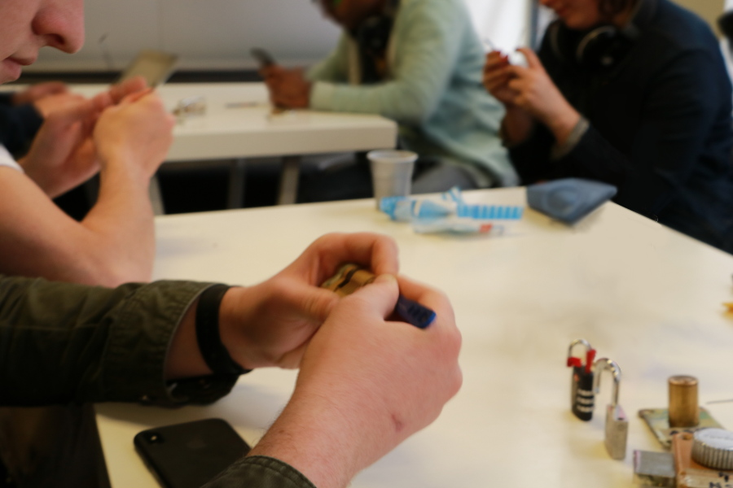

Présentation du lock picking
Le lock picking (crochetage) est l'art de l'ouverture de serrures de manière "fine", non-destructrice et ce pour tout type de serrures, y compris les serrures électriques.
En fonction du type de serrure, différentes technique seront disponible afin d'ouvrir celle-ci.
Le lock picking à l'Association Sans Nom

Dans le cadre des ateliers à l'ASN, nous présentons le fonctionnement de serrures, leurs défauts, ainsi que les alternatives qui ont été créés afin de parer à ces défauts.
Nous utilisons principalement des serrures paracentrique, du fait de leur simplicité de fonctionnement, d'achat de matériel et d'accessibilité à de nouvelles serrures.
Nous utilisons des méthodes de crochetage avec crochet afin de préserver un maximum le matériel, mais explorons aussi les méthodes dites "Brute force" sur des serrures en fin de vie, y compris pour le lock picking.
Enfin, le crochetage présenté en atelier est à but uniquement récréatif, pratiqué sur des serrures dédiées aux ateliers, dans le cadre de la loi. Nous décourageons et n'acceptons pas l'utilisation de ces pratiques en dehors du cadre légale.
Ateliers réguliers
Des ateliers de découverte sont réalisés régulièrement (environs toutes les deux semaines) au sein de 42, le samedi après-midi. Tout niveau est bienvenu, avec ou sans matériel. Afin de faire participer un maximum de personnes, nous encourageons les participants à ramener leurs kits et serrures dédiées.
Commandes groupées de kits, serrures et cadenas d'entraînement
Nous réalisons régulièrement des commandes groupées, permettant d'avoir des prix chez notre partenaire ouverture-fine.com. Les commandes présentent une liste de matériels conseillés pour leur durabilité et leur solidité, mais tout ajout en dehors de la liste est possible, vous permettant d'économiser sur les frais de port.
Nous encourageons à acheter du matériels de bonne qualité, et à éviter les kits bas de gamme contenant beaucoup d'outils, qui auront plus de chance de casser et d'endommager une serrure qui pourrait valoir le prix du kit. Un exemple, un pick de bonne qualité tourne autour des 3-5 euros.
Évènements extérieurs
Nous proposons aussi parfois des ateliers lors d'évènement extérieur, avec une présentation de la discipline et de la pratique accessible à tous. L'idée principale étant de montrer le fonctionnement des serrures, leurs points faibles, mais aussi les alternatives.